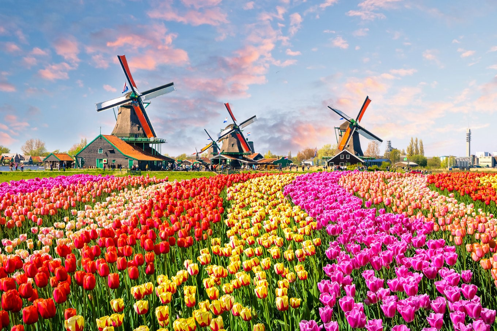
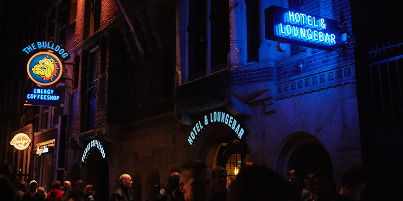

Três lugares para visitar quando for a Amsterdam!

Keukenhof
Keukenhof é o maior parque de tulipas do mundo, a apenas 40 km de Amsterdã. Todos os anos, fica aberto ao público por apenas 50 dias, na primavera.
Se você estiver em Amsterdã na época de abertura do parque, este é um bate-volta imperdível. O Keukenhof exibe 7 milhões de bulbos de flores plantados à mão, um a um, formando tapetes de tulipas numa área verde de 32 hectares.
Na programação oficial do parque, exposições de rosas, hortênsias, bromélias e outras espécies se revezam ao longo das semanas. A maior festa é o tradicional Flower Parade, um cortejo de carros alegóricos cobertos por flores, que cumprem percurso de 40 quilômetros e passam em frente ao parque. Em 2022 a Flower Parade acontecerá dia 23 de abril.
Durante a temporada, além de visitar os jardins você pode alugar bicicleta (alugue no estacionamento de carros junto à entrada do parque) ou fazer um passeio de barco pelos canais do parque (compre a passagem no guichê localizado no moinho de vento). Não há reservas prévias para nenhuma das duas atividades; você compra ao chegar.
Mais informações no site oficial do parque

Van Gogh Museum
O Museu Van Gogh, fundado em 1973, foi criado pelo Estado dos Países Baixos com apoio do sobrinho do pintor. O museu possui a maior coleção de obras do pintor holandês, com aproximadamente 1.400 obras, que incluím pinturas, desenhos e cartas de Van Gogh, como também pinturas de artistas contemporâneos provenientes do século XIX. Realiza projetos de pesquisa e de aprendizagem sobre o pintor. Abriga exposições fixas e temporárias. Sua biblioteca conta com mais de 35.000 livros e artigos sobre Vincent van Gogh e seus contemporâneos.
É o segundo museu de arte mais visitado dos Países Baixos, atrás do Rijksmuseum. Encontra-se na posição 31 dentro da lista dos museus de arte mais visitados do mundo. Foi eleito o melhor museu do mundo por visitantes europeus.
Página oficial do museu

Bulldog Hostel and CoffeShop
Esse foi o primeiro coffeshop de Amsterdam, mas não deixe-se enganar pelo nome, os coffeeshops não vendem exatamente café, embora você também possa beber um espresso sentado em uma das mesas do local. Na época em que o The Bulldog™ The First, a maconha ainda não havia sido legalizada no país – e, de certa forma, ela nunca foi, embora tenha sido descriminalizada e seu uso seja tolerado em toda a Holanda. O resultado foi a legalização das coffeeshops, espaços onde é possível comprar e fumar maconha e haxixe. Qualquer pessoa acima de 18 anos pode entrar nesses estabelecimentos e comprar até 5 gramas de erva. Mas nem pense que é possível misturá-las com álcool: bebidas alcoólicas não podem ser vendidas nestes locais. Apesar disso, sempre tem um bar do próprio Bulldog ao lado de cada coffeshop. Mesmo que não vá fazer uso de alguma substância no local, vale a pena dar um conferida nessa parte cultural da Holanda!
Mais Informações e curiosidades